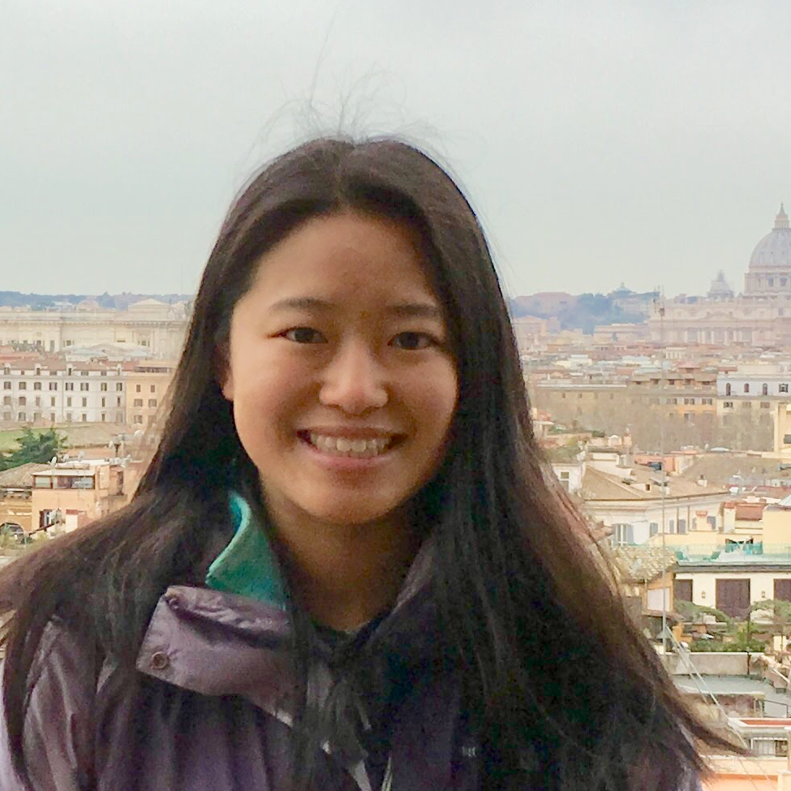

|  |
|
About me
I am a graduate student in EECS at MIT CSAIL, advised by Phillip Isola. I am supported by a NSF Graduate Research Fellowship and Adobe Research Fellowship. My current interests are in computer vision and image synthesis. I spent two summers at Adobe Research working with Richard Zhang, Jun-Yan Zhu, Michael Gharbi, and Eli Shechtman. I also frequently collaborate with Ser-Nam Lim at Facebook.
Previously I was at Churchill College, University of Cambridge. I did an MPhil in Machine Learning, where I studied uncertainty and interpretability in Bayesian neural networks. I am extremely grateful for support from the Churchill Scholarship.
I completed my undergraduate degree at the University of Pennsylvania in Computer Science and Bioengineering. I worked with Dr. Danielle S. Bassett in computational neuroscience, focusing on modelling neural processes as dynamic networked systems.
Papers
| 2021 | |
| Ensembling with deep generative views
Lucy Chai, Jun-Yan Zhu, Eli Shechtman, Phillip Isola, Richard Zhang. Conference on Computer Vision and Pattern Recognition, 2021 [Paper][Website][Code] |
|
| Using latent space regression to analyze and leverage compositionality in GANs
Lucy Chai, Jonas Wulff, Phillip Isola. International Conference on Learning Representations, 2021 [Paper][Website][Code] |
|
| 2020 | |
| What makes fake images detectable? Understanding properties that generalize
Lucy Chai, David Bau, Ser-Nam Lim, Phillip Isola. European Conference on Computer Vision, 2020 [Paper][Website][Code] |
|
| On the "steerability" of generative adversarial networks
Ali Jahanian*, Lucy Chai*, Phillip Isola. International Conference on Learning Representations, 2020 [Paper][Website][Code] |

| 2019 |
| Evolution of semantic networks in biomedical texts Lucy R. Chai, Dale Zhou, Danielle S. Bassett Journal of Complex Networks, 2019. |
| 2018 |
| Uncertainty Estimation in Bayesian Neural Networks and Links to Interpretability Lucy R. Chai Department of Engineering, University of Cambridge, 2018. [Thesis] [Code] |
| Name and Face Matching John C. Henderson, Abigail Gertner, Jeffrey Zarella, Lucy R. Chai, Keith Miller MITRE Corporation; US. Patent App. 16/042,958. |
| Development of a Next Generation Tomosynthesis System Jeffrey E. Eben, Trevor L. Vent, Chloe J. Choi, Sushmitha Yarrabothula, Lucy Chai, Margaret Nolan, Elizabeth Kobe, Raymond J. Acciavatti, Andrew D. A. Maidment SPIE Medical Imaging Conference, 2018. [Paper] |
| 2017 |
| Evolution of brain network dynamics in neurodevelopment Lucy R. Chai, Ankit N. Khambhati, Rastko Ciric, Tyler M. Moore, Ruben C. Gur, Raquel E. Gur, Theodore D. Satterthwaite, Danielle S. Bassett Network Neuroscience, 2017. [Paper] [Code] |
| 2016 |
| Functional network dynamics of the language system Lucy R. Chai, Marcelo G. Mattar, Idan A. Blank, Evelina Fedorenko, Danielle S. Bassett Cerebral Cortex, 2016. [Paper] |
Teaching
Fluid Mechanics (BE350), UPennTeaching Assistant with Prof. Dan Huh
Spring 2017
Automata, Computability, Complexity (CIS262), UPenn
Teaching Assistant with Prof. Aaron Roth
Fall 2016